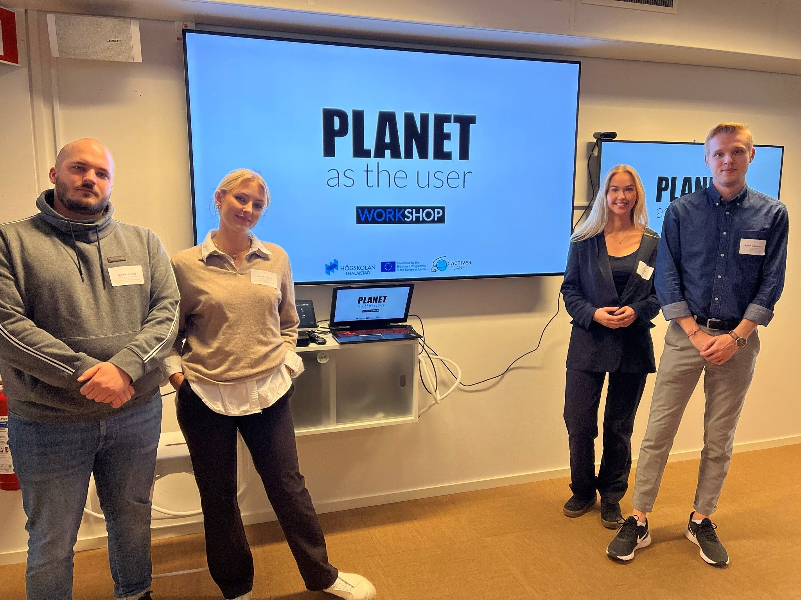
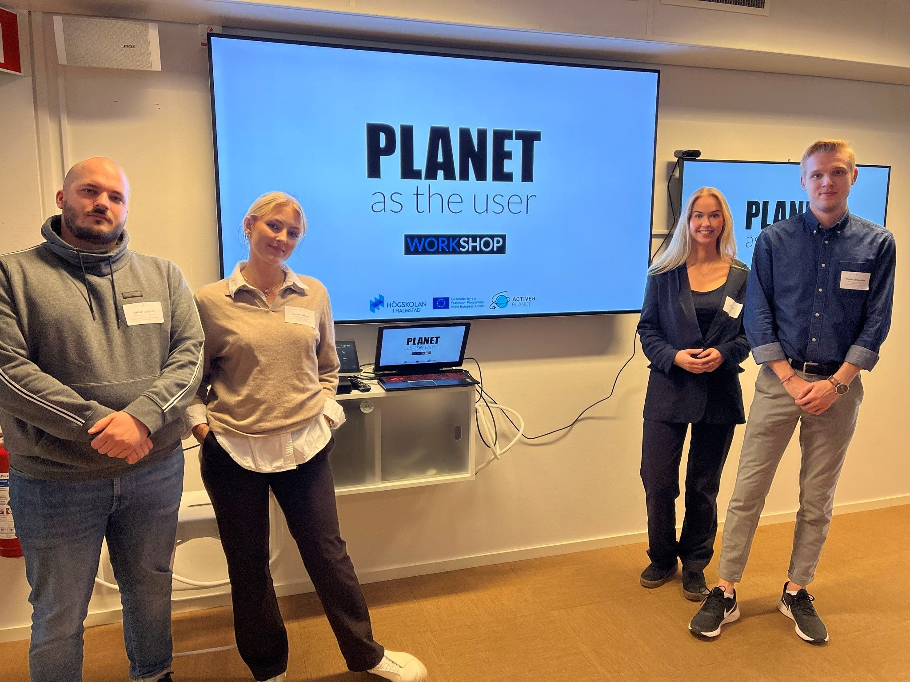

Active8 Planet 2021–2022
Overview
Active8 Planet explored how design can put the planet at the center of mobility innovation. The project brought together industry, academia, and agile teams to address ecological sustainability in the mobility sector through research, workshops, and speculative design.
Process
As a UX designer, I helped shape research and design processes, facilitating workshops and gathering insights to address complex sustainability challenges. We used participatory methods and speculative tools to engage stakeholders and generate new perspectives.
 


Outcome
The result: a speculative, card-based training game for agile teams, encouraging empathy for the planet by visualizing the impact of everyday decisions. The concept was tested and iterated in pilot workshops, with digital elements added for a dynamic experience.
Reflection
This project deepened my expertise in sustainable design, workshop facilitation, and the translation of research insights into actionable tools for teams.